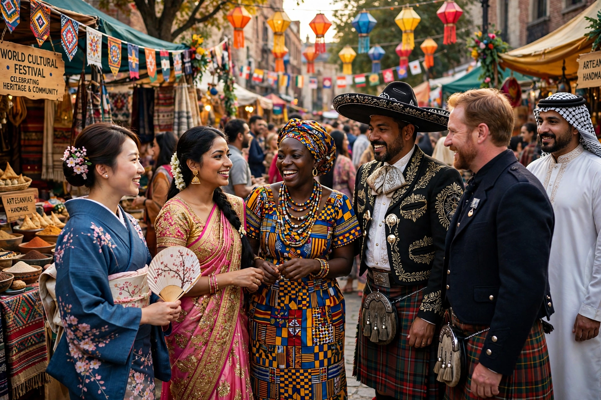

Cultural anthropology is a branch of anthropology focused on the study of cultural variation among humans. It examines how people in different places live, organise societies, and make meaning, largely through ethnography.

Franz Boas founded American cultural anthropology with historical particularism and cultural relativism, opposing racist evolutionism. In Britain, social anthropology (Malinowski, Radcliffe-Brown) developed in parallel.
Culture, kinship, ritual, myth, symbolism, and power. Thinkers include Margaret Mead, Claude Lévi-Strauss (structuralism), Clifford Geertz (interpretive 'thick description'), and Pierre Bourdieu.
Subfields include medical, economic, political, urban and digital anthropology. Applied anthropologists work in development, business, and public policy.